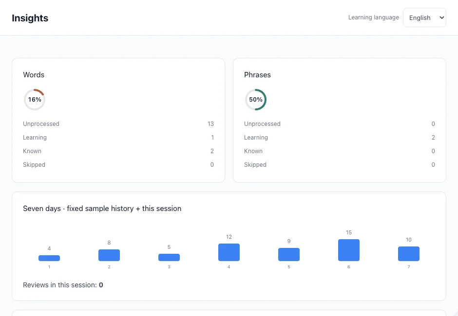
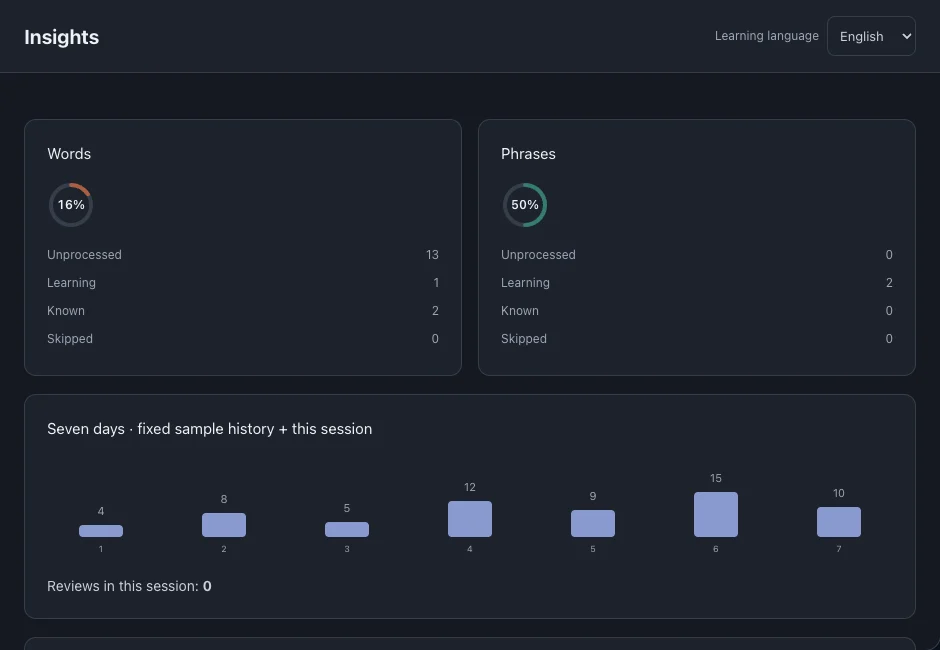

Insights
Use learning states, review history and file progress to decide what to study next. These indicators summarize activity, not a language-proficiency score.
On this page
Word and phrase states
The counts distinguish Unprocessed, Learning, Known and Skipped entries. Words and phrases are summarized separately.



Recent reviews
The seven-day chart shows recent review activity. It changes when reviews are recorded; it does not mean every word was mastered.
File learning progress
The learning index combines entry states: Known and Skipped count fully, Learning counts halfway, and Unprocessed counts as zero.
- Find a file in Insights and open its progress entry to continue reading.